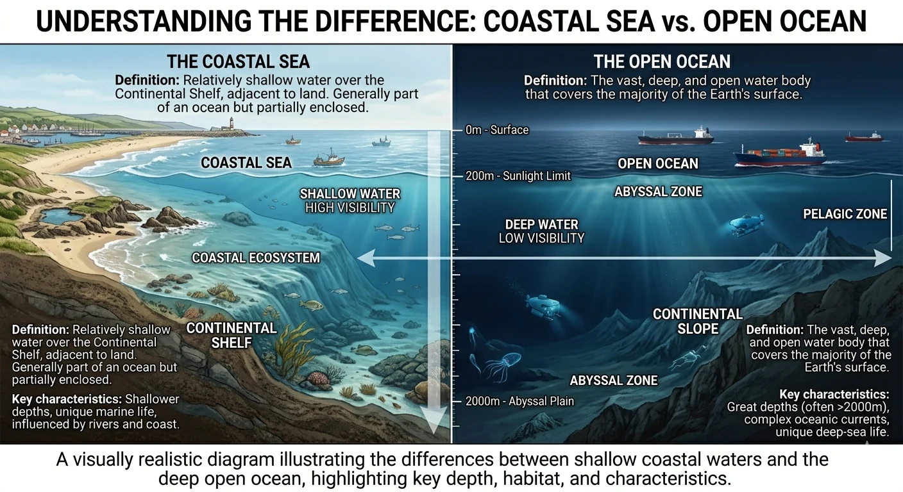
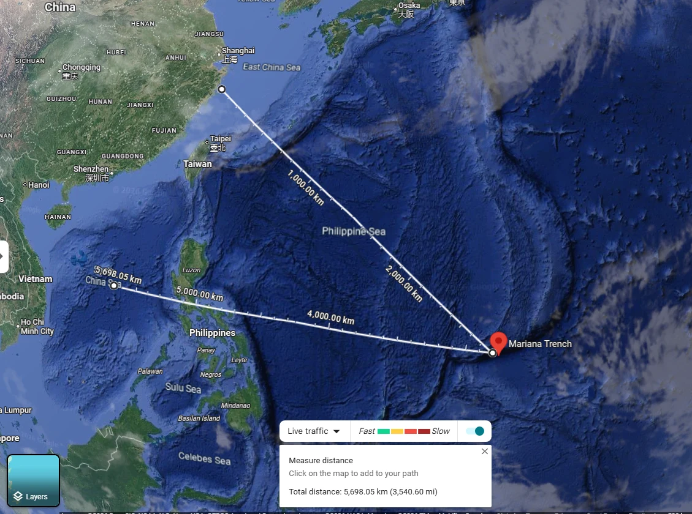
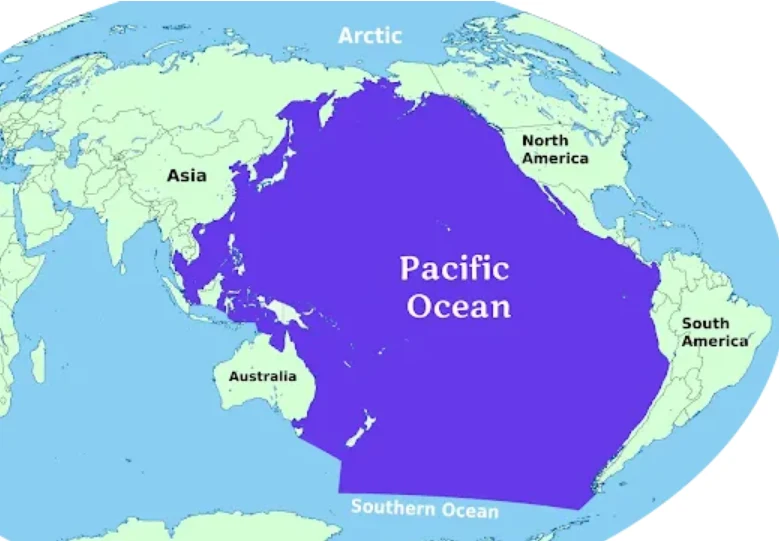
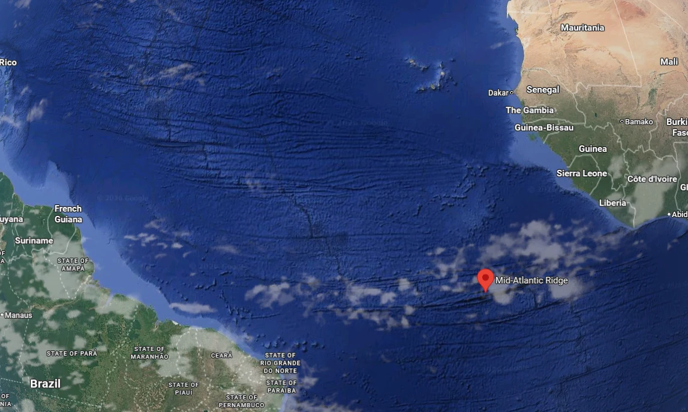

Chapter Overview
Key skills you will develop by the end of Chapter 1: Oceans and Seas.
Geography: Oceans and Seas — Complete Notes
Full chapter Q&A with all 5 oceans, river system, water cycle, and ocean currents: PDF format
Please note: This page is a concise preview. The full notes with all 72+ questions, diagrams and vocabulary are available in the PDF. Download it for complete exam preparation.
Chapter Diagrams
Illustrated notes and maps from W.H. Academy Class 8 Geography.




Oceans vs Seas and the Five Oceans
Definitions, key differences, and facts about all five oceans of the world.
Oceans and Seas: Definitions
1. What percentage of Earth's surface is covered with water? Why is Earth called the Blue Planet?
2. What are the key differences between oceans and seas?
Seas: Smaller and shallower than oceans. Where oceans meet land. Made of saline water. About 50 seas in the world. Mostly partially enclosed by land.
Special case: The Caspian Sea is unique because it is the only sea enclosed by land on all sides — making it essentially a very large lake.
The Five Oceans — Quick Reference Table
| Ocean | Rank | Area (km²) | Avg Depth | Deepest Point | Depth |
|---|---|---|---|---|---|
| Pacific | 1st (largest) | 165 million | ~4,000 m | Mariana Trench | 10,924 m |
| Atlantic | 2nd | 106 million | ~3,646 m | Puerto Rico Trench | 8,600 m |
| Indian | 3rd | 70 million | 3,750 m | Java Trench | 7,258 m |
| Southern | 4th | 20 million | ~3,270 m | S. Sandwich Trench | 7,235 m |
| Arctic | 5th (smallest) | 14 million | 1,000 m | Fram Basin | 5,665 m |
1. Describe the Pacific Ocean — size, depth, borders and special features.
Its deepest point is the Mariana Trench (10,924 m), near the Mariana Islands — the deepest known point on Earth. The Pacific contains 25,000 Pacific islands.
2. Describe the Atlantic Ocean and its special undersea feature.
Special feature: The Mid-Atlantic Ridge — an underwater mountain range on the ocean floor that forms part of the longest mountain range in the world.
3. Name all five oceans in order from largest to smallest, with areas.
The River System and River Indus
Source, tributaries, current, meanders, delta, estuary and the Indus system.
Key River Features
1. What is a river system? Describe the River Indus and its tributaries.
The River Indus begins from a mountain spring, fed by glaciers from the Himalayan, Karakorum, and Hindu Kush ranges. In the plains of Punjab, the Panjnad River is formed from the confluence of five rivers: Chenab, Jhelum, Ravi, Beas, and Sutlej. It ends in a large fan-shaped delta in southern Pakistan and empties into the Arabian Sea.
2. What is a meander? What is a delta? What is an estuary?
Delta: A fan-shaped piece of land at the mouth of a river, formed by sediment deposits. The Indus Delta has swamps, mudflats, creeks, estuaries, marshes, and mangrove forests. Deltas have fertile soil.
Estuary: Where a river meets the sea — freshwater mixes with saltwater producing brackish water (slightly salty).
The Hydrological (Water) Cycle
How water moves between Earth and atmosphere — all stages explained.
Stages of the Water Cycle
1. What is the hydrological cycle? Explain all its stages in order.
1. Evaporation: Solar radiation heats water in oceans/lakes/rivers, turning it into water vapour.
2. Transpiration: Plants release water vapour through their leaves.
3. Condensation: Water vapour rises, cools at higher altitude, and forms clouds.
4. Precipitation: Water falls from clouds as rain, snow, hail, sleet, or drizzle.
5. Surface runoff: Water flows downhill to rivers, lakes and oceans.
6. Infiltration: Some water seeps into soil forming groundwater and aquifers.
Then the cycle repeats continuously, replenishing freshwater for all living things.
2. What is an aquifer? What is precipitation?
Precipitation is when water returns to Earth from clouds. It may fall as: rain, snow, hail, sleet, or drizzle.
Importance of Oceans and Seas
Climate, oxygen, food, medicine, trade, and the Arabian Sea's role for Pakistan.
Why Oceans Matter
1. What are the main reasons oceans are important for life on Earth?
1. Control climate: Covering 70% of Earth, oceans transport heat from the equator to the poles, regulating climate and weather. Oceans store 50 times more CO₂ than the atmosphere.
2. Produce oxygen: Marine phytoplankton produces over 50% of Earth's oxygen.
3. Provide food: Billions of people consume fish and seafood daily. Algae — rich in proteins — are also a food source.
4. Support trade: Over 76% of US trade involves marine transportation.
5. Provide medicine: Ocean organisms provide ingredients that fight cancer, arthritis, Alzheimer's, and heart disease.
6. Generate employment: Ocean-dependent businesses employ almost 3 million people.
7. Recreation: Fishing, boating, kayaking, whale watching, and tourism.
2. Why is the Arabian Sea critically important for Pakistan?
Pakistan depends on the Arabian Sea for 95% of its total trade and 100% of its petroleum, lubricants, and oil supplies.
CPEC (China Pakistan Economic Corridor) connects China's western Xinjiang with the Arabian Sea, enabling China's presence in the Arabian Sea and making it strategically important for both nations.
3. What is marine biodiversity? What is blue carbon?
Biological hotspots are ocean areas where rare species exist that are found nowhere else in the world.
Blue carbon is carbon captured by oceans and coastal ecosystems such as mangroves, seagrass beds, and tidal marshes. These ecosystems also protect coasts from erosion, storms, and rising sea levels.
Ocean Currents
How ocean water moves, primary and secondary forces, and the Coriolis Effect.
Forces Driving Ocean Currents
1. What are ocean currents? What are the two types of forces that affect them?
Primary forces: Solar heat, Wind, Gravity, Coriolis Effect.
Secondary forces: Temperature, Density.
2. How does wind cause ocean currents? How does the Coriolis Effect affect them?
Coriolis Effect: Due to Earth's rotation, moving water is deflected to the right in the Northern Hemisphere and to the left in the Southern Hemisphere. This causes ocean currents to curve and circulate in large gyres (circular patterns) rather than flowing in straight lines.
Chapter 1 Vocabulary
Important terms — learn these definitions for exam questions.
| Term | Definition |
|---|---|
| Saline water | Salty water — water that contains dissolved salt |
| Marine life | Living things (animals and plants) that live in the sea or ocean |
| Mariana Trench | The deepest point on Earth (10,924 m), located in the Pacific Ocean near the Mariana Islands |
| Mid-Atlantic Ridge | An underwater mountain range on the floor of the Atlantic Ocean; part of the world's longest mountain range |
| Tributary | A smaller river or stream that flows into a larger river |
| Watershed/Drainage basin | The entire area of land drained by a river and all its tributaries |
| Confluence | The point where two rivers join together |
| Panjnad River | Formed by the confluence of five rivers: Chenab, Jhelum, Ravi, Beas, and Sutlej |
| Meander | A wide looping bend in a river as it winds across flat land |
| Delta | Fan-shaped land formed at a river's mouth by deposited sediment |
| Estuary | Where a river meets the sea, mixing fresh and salt water |
| Brackish water | Slightly salty water — a mix of freshwater and seawater |
| Hydrological cycle | The continuous movement of water between Earth and its atmosphere (also called the water cycle) |
| Evaporation | Water turning into vapour (gas) due to heat from the Sun |
| Transpiration | Water released by plants through their leaves into the air |
| Condensation | Water vapour cooling and turning back into liquid water, forming clouds |
| Precipitation | Water falling from clouds — rain, snow, hail, sleet, or drizzle |
| Aquifer | Underground layer of porous rock saturated with groundwater |
| Phytoplankton | Tiny plant-like organisms in the ocean that produce 50% of Earth's oxygen through photosynthesis |
| Marine biodiversity | The variety of all living things found in the world's oceans |
| Blue carbon | Carbon stored by ocean and coastal ecosystems like mangroves and seagrass |
| CPEC | China Pakistan Economic Corridor — connects China's western region to the Arabian Sea via Pakistan |
| Coriolis Effect | The deflection of moving ocean water (right in N. Hemisphere, left in S. Hemisphere) due to Earth's rotation |
| Upwelling | When cold, nutrient-rich deep water rises to the ocean surface — supports rich fishing grounds |
Test Yourself: Chapter 1 Quiz
Chapter-wise MCQs aligned with APSACS and FBISE syllabus. No login required.
Start Quiz NowNeed Live Explanation of Oceans and Seas?
Join W.H. Academy: Live tutoring, recorded lectures and full chapter solutions for APSACS and FBISE students in Rawalpindi and online across Pakistan.